Сборник всякого полезного на одном сайте со всех страниц сразу.
Учтите, что:
- Этот путеводитель предназначен для устройств с небольшим экраном.
- Я всё ещё работаю над ним, так что что-то может быть сломано.
- Есть предложение? Писать сюда discord: @KOCMOHABT
Прочитал? Можешь кликать по вкладкам сверху, либо продолжить ознакомление со следующим:


Список изменений /TG/shiptest handbook
Последние главные изменения сборника /TG/shiptest handbook.
Все мелкие изменения не описаны, но если есть желание с ними ознакомиться то вот полная история изменений.